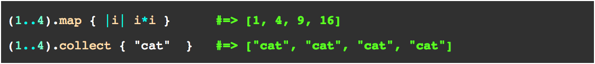

Technical Blog: Week 4
Public Ruby Methods: #Map
August 10, 2014
August 10, 2014
This week's blog post will be short but sweet. Ruby's map method is effective and useful in numerous scenarious. You call .map on an enumerable object (an array or a range) and follow it with a block. Accordingly, it will return a new array calling the given block for each element. For example:
Here are some ways the map function is particularly useful:
- When you would like to non-destructively modify each element of an array. The each function is useful for many things, but the map function will create a new array, which could be helpful if you'd like to use the previous one later on in your code.
- If you'd like to map into the same array, you can use .map! instead.
- The method .collect is an alias of .map - you can use either to accomplish the same thing.